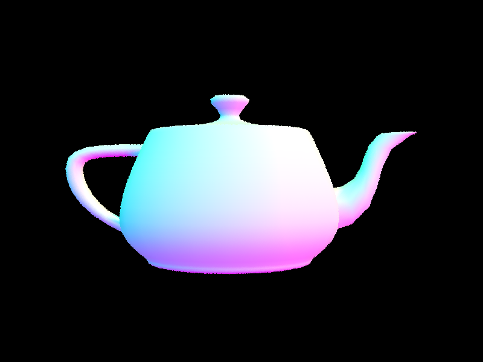

In this project, we build an extensive pathtracing algorithm. There are many components of the algorithm, ranging from ray generation to global illumination and adaptive sampling. We begin with ray generation, which deals with the transformation of image coordinates into the world space. We then build a function that randomly generates rays to estimate the color value of a pixel. We also built algorithms to detect the intersection of a ray and sphere/triangle primitives. Another part of our project was implementing a bounding volume hierarchy in order to reduce rendering time by reducing ray intersection calculations. We built the BVH structure and functions for detecting intersections between a ray and bounding volume. We found a very significant improvement by comparing rendering times with BVH acceleration enabled/disabled.
Part 1: Ray Generation and Intersection
To generate a ray, we first transformed the given image coordinates into camera space. To do this, we translated and scaled the image coordinates. Once we had these x/y coordinates in camera space, we used them to construct the ray’s direction vector. The z-coordinate of this vector was -1 to ensure that it lied on the Z = -1 plane. The next step was to transform the direction vector into world space; we did this by applying the c2w rotation matrix to it. We then normalized the direction vector. Finally, we generated the ray with the described direction vector, and pos (camera position in world space) as the origin vector. The ray’s min and max t values were set to the near and far clipping planes.
After generating rays and using the ray generation function to estimate the integral of radiance over pixels, we built functions for sphere and triangle intersections.
For sphere intersection, we used the ray’s origin/destination vectors and the sphere’s origin/radius values to set up a quadratic equation with t as the variable. We could then solve for t using the quadratic formula. If one of the t values was within the range of the ray’s min and max t values, there was an intersection. We chose the smallest/closest of the two t values, and set it as the ray’s new max t value. Then, we set the attributes of the Intersection structure. If there was no t value in range, we returned false.
For intersecting triangle primitives, we used the Moller Trumbore algorithm. We began by calculating the vectors that are involved in the algorithm – E1, E2, S, S1, and S2. We used these vectors to compute the vector containing [t, b2, b3]. We then needed to calculate the b1 value, which we did by evaluating 1 - b2 - b3. We now had our t value and all three barycentric coordinates, which allowed us to continue and test for an intersection. We tested our barycentric coordinates for validity and checked if the t value was between the ray’s min and max t values. If the t value was not in that range, there was no intersection so we returned false. If the t value was in range, we set it as the ray’s new max t value. We also set the appropriate values for the Intersection structure that was passed into the function. The surface normal was one attribute of the Intersection structure that we set. Using our barycentric coordinates and the triangle’s normals, we calculated the surface normal at the intersection; we then normalized the normal.

|

|

|

|
Part 2: Bounding Volume Hierarchy
We began our BVH construction algorithm by iterating through all primitives, from the start to end iterator. On each iteration, we expand the bounding box associated with the BVH node and add to the sum of the centroids of each bounding box. We then check if there were less than max_leaf_size primitives in the list defined by the start and end iterators (i.e check if node is a leaf). If there were, we set the node’s start and end attributes equal to the start and end iterators that were passed in; then we return the node. If the node was not a leaf, we continue to construct the children of the node. To do this, we first find the longest axis; this is the axis we will split along. Then, we partition the list of primitives by checking if its centroid is larger than the average centroid along the longest axis. We calculated the average centroid using the sum of centroids from earlier in the function. With the list partitioned, we now had two smaller lists that we could pass in as arguments to construct the left and right children. We proceeded to construct the left and right children recursively.
As we mentioned above, our heuristic for choosing the splitting point was the average centroid along the longest axis. We chose to do this because there’s more likely to be the same amount of primitives on either side of the split compared to the other option we considered, which was splitting at the midpoint of the longest axis. It was also a simple heuristic to evaluate, and the average could be calculated within the same loop that we already made to expand the bounding box.
|
|

|

|

|
Rendering time comparisons on moderately complex geometries
Data/console output:
peter.dae:
With BVH acceleration:
[PathTracer] Rendering... 100%! (1.8672s)
[PathTracer] BVH traced 468193 rays.
[PathTracer] Average speed 0.2507 million rays per second.
[PathTracer] Averaged 75.050744 intersection tests per ray.
Without BVH acceleration:
[PathTracer] Rendering... 100%! (142.6431s)
[PathTracer] BVH traced 407849 rays.
[PathTracer] Average speed 0.0029 million rays per second.
[PathTracer] Averaged 7340.644493 intersection tests per ray.
CBCoil.dae:
With BVH acceleration:
[PathTracer] Rendering... 100%! (0.3882s)
[PathTracer] BVH traced 450078 rays.
[PathTracer] Average speed 1.1594 million rays per second.
[PathTracer] Averaged 17.846640 intersection tests per ray.
Without BVH acceleration:
[PathTracer] Rendering... 100%! (22.7969s)
[PathTracer] BVH traced 476786 rays.
[PathTracer] Average speed 0.0209 million rays per second.
[PathTracer] Averaged 1075.098667 intersection tests per ray.
bunny.dae:
With BVH acceleration:
[PathTracer] Rendering... 100%! (1.3121s)
[PathTracer] BVH traced 465995 rays.
[PathTracer] Average speed 0.3552 million rays per second.
[PathTracer] Averaged 52.776292 intersection tests per ray.
Without BVH acceleration:
[PathTracer] Rendering... 100%! (117.5592s)
[PathTracer] BVH traced 412512 rays.
[PathTracer] Average speed 0.0035 million rays per second.
[PathTracer] Averaged 5759.031352 intersection tests per ray.
The rendering was done with 8 threads and in windowless mode. The data from the comparison of all three images averages out to the following: 74.9 times faster rendering time, 89.0 times fewer intersection tests per array, and 81.1 times higher average speed (rays/second). The comparisons were done on medium-sized .dae files. Only three files were tested, but it appears that the benefits of BVH acceleration are especially apparent on the two larger files. This would make sense, because we expect ray intersection time to go from linear to logarithmic time. In all three images, the performance increase from BVH acceleration is evident in the results. By checking the bounding volumes for intersections first, we eliminate unneeded operations that would result from checking intersections with the bounded primitive objects. Fewer intersection tests results in a faster overall rendering time.
Part 3 Direct Illumination
Walk through both implementations of the direct lighting function:
We implemented two different kinds of light sampling. The first was direct lighting with uniform hemisphere sampling. This is where we are sampling random directions for each pixel in uniform. By sampling the rays in the “wi” (incoming) direction, we can see if the ray points at light. If it does, we can calculate the radiance towards the camera (L_out)- which we weigh by the BSDF (Ratio of reflected radiance (Li) along direction “wr” (w_out) to the irradiance (E) from direction “wi”) and the cosine theta from the incoming direction. We do this over a desired number of samples to implement direct lighting. At the end we then divide by a constant (1/2PI) * number_samples to average it out. However the image still seems a little grainy as- due to the randomness- only some sampled directions points at light. So, some never point to light by chance causing radiances to be zero.
The second direct lighting function we implemented- which will help take care of the grainy issue- is importance sampling. This is where we sample only over the area of the light where the radiance is existent. So, instead of sampling in random “wi” directions in the hemisphere from the hit point (hit_p), sample the random areas on the light source. To implement this, we have a nested for loop. In order to figure out where/how much light to cast on the hit point, we loop through a vector storing all lights in the scene. If light is a point source, only sample once since all samples from a point light source are the same. Otherwise we use the given number of samples per area light source. Then, we loop through to calculate the total amount of outgoing light. Within this loop, If the Cos Theta i is negative, we just continue since the light is behind the surface. Otherwise, we cast a ray where we use (EPS_F) offset for (min_t). Also, subtract (EPS_F) from (distToLight) to avoid intersecting with light itself. We check if the ray doesn’t intersect with anything using BVH->intersect(). If so, we know light does cast light on the hit point. There we calculate the total amount of outgoing light by weighing by BSDF, Cos Theta i. And, Also divide by the pdf to help point in the direction of what we expect to contribute to the light. At the end we divide by the number_samples to average it out, where we return a rather good estimate.
Examples of images rendered with both implementations of the direct lighting function:
|
|
|
|
|
|
Uniform hemisphere vs lighting sampling:
As we can see above, comparing uniform hemisphere sampling and lighting sampling, the uniform hemisphere sampling looks more grainy. This is due to the fact that we’ve been sampling random directions for each pixel in uniform, so only some point at light, and that’s why some radiances are zero and don’t hit light. However, in importance sampling we only sample over the area of the light where the radiance is existent. So, instead of sampling in random “wi” directions in the hemisphere from the hit point (as we do in uniform hemisphere sampling), we sample the random areas on the light source. This allows us to create a better estimate of the radiance pointing towards the “camera”s direction. Also, importance sampling takes into account if the ray is pointing at a “point light source”, so we do not accidentally sample more than once in that direction (as only one sample is needed).
Comparing the noise levels in soft shadows:
Four scenes when rendering with 1, 4, 16, and 64 light rays, 1 sample per pixel, and using light sampling.
|
|
|
|
|
|
We can see that with the increase in light ray samples the photos become smoother, and the shadow softer. With more light rays cast per pixel the accuracy of the radiance for each pixel becomes more accurate. In the lesser light ray images, for many hit points-due to chance- we do not capture any light even when there is a direct ray that could hit that point.
Part 4 Global Illumination
Walk through your implementation of the indirect lighting function:
With global illumination, we are now taking into account indirect lighting effects since light reflects off of surfaces, and illuminates other surfaces in the real world. This will create a more realistic image. To implement this we implement a recursive function called at_least_one_bounce_radiance() which first calls one_bounce_radiance() (which calls either hemisphere or importance light sampling- depending on the -H tag). This takes care of the direct lighting. The part that takes care of the indirect illumination is the recursive calls that takes one random sample direction “wi” based on hit point (not pointing at the light), traces a ray in that direction, and gets the outgoing light from the new hit point. The light accumulates in the recursive call- as the ray called in the recursion is the ray we create before calling it. We decrease the r.depth (initialized with max_ray_depth) variable by one every call, and once it is 1, we break out of the recursion. Another way we break out of the recursion is with a probability function that returns true with a ratio we set. The reason we have this is because uniform max_ray_depth creates a bias in some areas (let’s say like in area where light could bounce rapidly), so the randomness evens this out a bit better.
Examples of global direct and/or indirect illumination. Using 1024 samples per pixel:
|
|
|
In direct only you can see how the shadows are harsh, and anything not in the direct path of the light does not get lit up- like the ceiling for example. In indirect only illumination the shadows are very soft, and not as well defined since the the most direct and strongest radiance from the light directly is not taken into account, and evens out the light among everything in the scene. Also in the indirect illumination we see shadows from other directions other than the light are much more defined.
Comparing CBbunny.dae with differing max_ray_depth levels (Using 1024 samples per pixel):
|
|

|
|
|
|
|
|
On the 0th max_ray_depth, it only does 0 bounce illumination. With one max_ray_depth we see basically just direct illumination, and as the max_ray_depth increases further than that there is not much of a difference, especially with the russian roulette helping prevent the bias of light in certain areas with indirect lighting.
One scene rendered with sample-per-pixel rates 1, 2, 4, 8, 16, 64, and 1024. Using 4 light rays:
|
|
|
|
|
|
|
|
|
|
|
We see that a high amount of samples per pixel is important as the lower level ones have a significantly higher amount of noise. So, we can see that it is a more important variable for global illumination than the max_ray_depth at a larger scale.
Part 5 Adaptive Sampling
Walk through both implementations of the direct lighting function:
Adaptive sampling allows us to bias our amount of samples per spot based on whether we expect it to be within 95% confidence the right color already. We are basically calculating a confidence interval. We do this because some pixels hone in on the correct lighting and color more quickly than other spots. For example shadows might need to be sampled more than open areas with the uncertainty of how much light- and from where- the pixel is receiving. So, this would result in more red of a mapping. We do this by modifying the raytrace_pixel() function. We loop through the number of samples in sections of batches. After each batch iteration, we check if the confidence interval is less than or equal to the max tolerance multiplied by the mean, if it is, we’re within the confidence interval of 95% and break out of the loop. The way we calculate the confidence interval of 95% is with 1.96 * standard_deviation / (the number of samples). We also use s1 (which is the summation of the illumination), and s2 (which is the square of s1) to calculate the mean and standard deviation. The mean is s1 divided by the current amount of samples (casted as a double), and the standard deviation squared is (s2 - s1**2/n_currSampleAmount) divided by n_currSampleAmount-1 (casted to a double). These calculations basically help us determine whether or not we are in the confidence interval, and help us prioritize- which in turn helps us speed up the rendering with a higher quality.
CBbunny.dae rendered with 2048 samples per pixel, 1 sample per light, and max ray depth 5. Also, 64 samples per batch and 0.05 max tolerance:
|
|
|